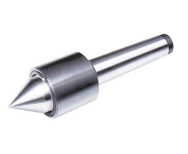
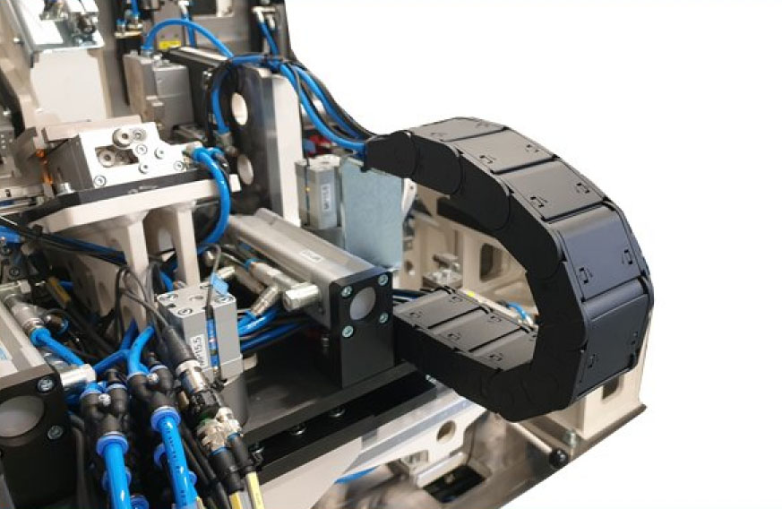
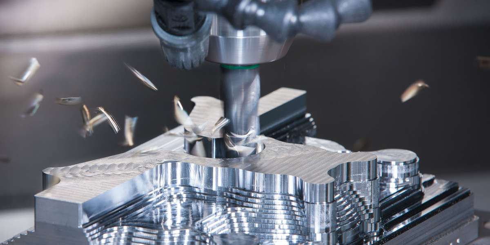
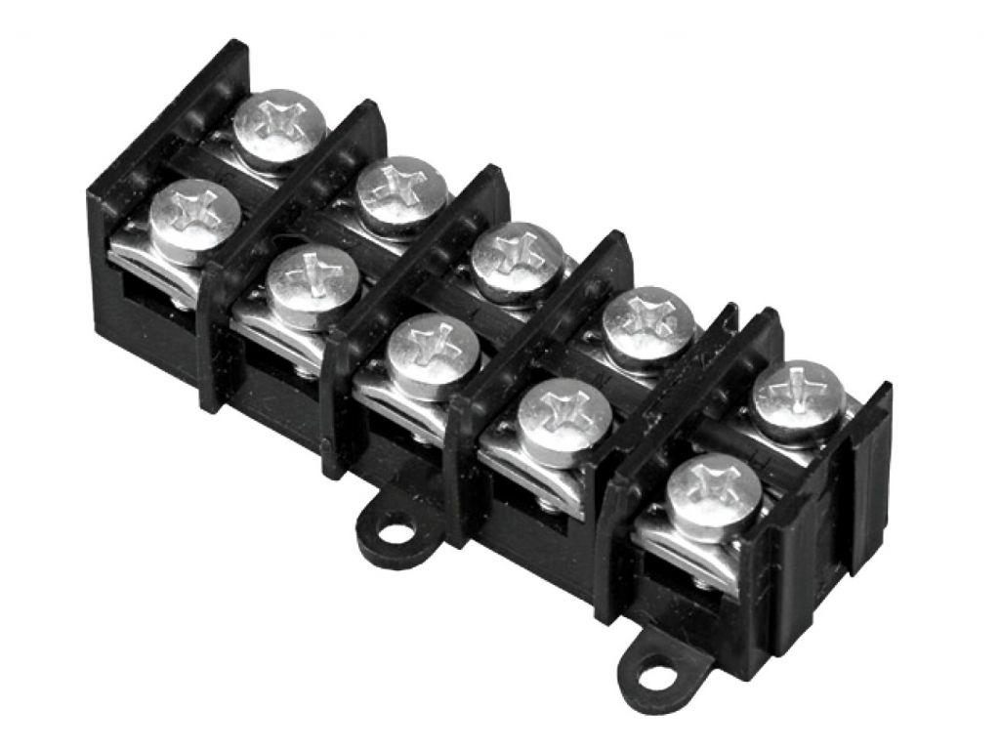
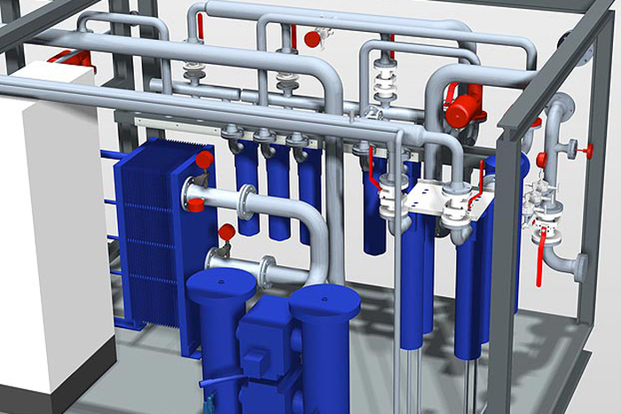

Jsme česká strojírenská společnost
Od roku 2000 se zaměřujeme na vývoj zákaznických výrobků a na vývoj a výrobu jednoúčelových strojů především pro automobilový průmysl.
V současné době má společnost TECHNIK PARTNER s.r.o. své pevné místo na trhu a dodává jak kontaktní hroty na elektrické testování, tak nabízí následující zakázkový vývoj a výrobu:
- adaptéry s mechanickou aretací
- zakládací a montážní přípravky
- přípravky pro IC a funkční testy
- CNC obrábění (kusová, malosériová výroba)
- konstrukční CAD návrhy
- jednoúčelové stroje a zařízení
- zakázková elektrotechnika

...nástroje pro montáž a demontáž kontaktních hrotů a dutinek...

...nabízí komplexní řešení od prvního konceptu pracoviště, přes 3D studii, výrobu zařízení až po finální validaci u zákazníka s následným zajištěním odborného servisu.

...technologický proces, kterým se vytváří požadovaný tvar obráběného předmětu (obrobku), v daných rozměrech a v daném stupni přesnosti, a to odebíráním materiálu

...univerzálních svorek lze připojit vodiče s průřezem od 1,5 do 120 mm k přípojnici tloušťky 5 nebo 10 mm.

...zahrnuje IT konzultace a zapojení hardwaru – HP serverů a CAD pracovních stanic
...jsou speciální zařízení zkonstruované pro účel testování automobilových dílů v klimatických komorách, kde se provádí testy stárnutí v důsledku povětrnostních vlivů.